Corn Leaf Disease Detection with chat bo ai
A system that can detect corn leaf diseases using a Convolutional Neural network(CNN) together with the chat bot ai that can answer specific question about corn or the system. It has also a feature that it can get how severity the hectare will be.

Bato Bato Pick (Rock, paper, scissor)
Bato Bato Pick, more commonly known as Rock Paper Scissors, is a game where two players simultaneously make a gesture representing one of the following: a rock, paper, or scissors. This is a version that your opponent is the system.

To-do List
This project can use for reminding yourself what to do. it can store, add, check, uncheck, and delete Task. The primary purpose of a to-do list is to provide a digital platform where users can create, track, and prioritize their tasks easily.
